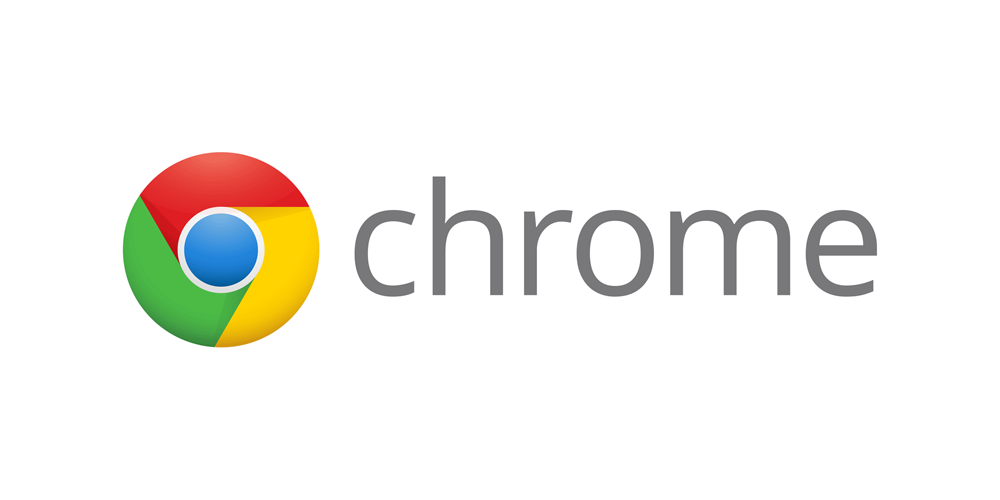
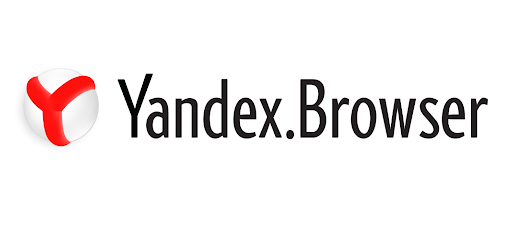
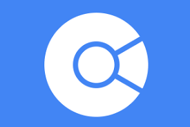
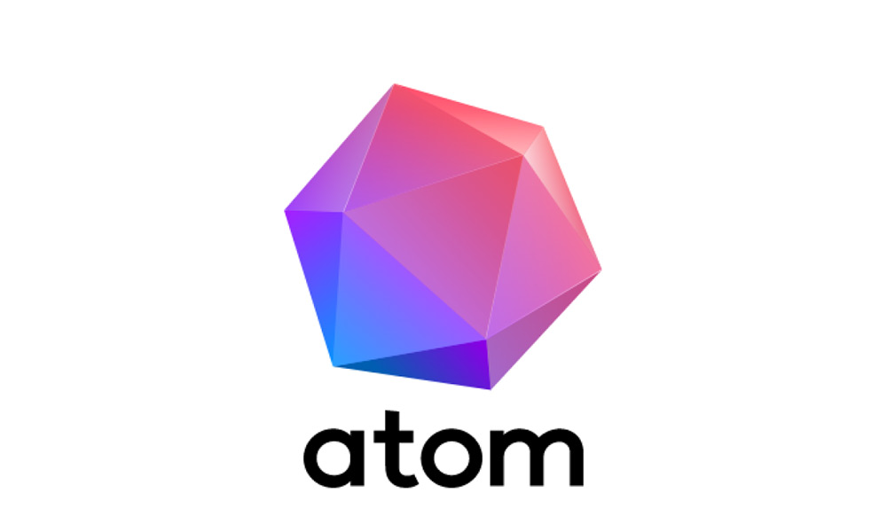

Браузеры для компьютера.
Лучшие браузеры для вашего компьтера
Браузер однозначно одна из самых важных программ для компьютера. Он есть у каждого, но как выбрать браузер для себя? В этой статье мы расскажем вам об этом.
1. Google Chrome
Самый лучший и быстрый браузер для ПК с Windows

• Сайт: www.google.com/chrome
• Простой дизайн и эргономичный интерфейс
• Кроссплатформенность и быстрая синхронизация данных на всех устройствах
• Большое колличество дополнений и тем
• Высокий уровень безопасность и скорости работы
2. Яндекс.Браузер
Самый популярный браузер в России

• Сайт: browser.yandex.com
• Встроенный блокировщик рекламы
• Полезный турбо-режим для тех у кого плохой интернет
• Кроссплатформенность
• Хороший уровень безопасности
3. Mozilla Firefox
Самый легкий браузер для слабых ПК

• Сайт: www.mozilla.org
• Встроенный читатель документов
• Высокий уровень безопасности
• Не требует много ресурсов для высокой производительности
4. Опера
Браузер со встроенным ВПН

• Сайт: www.opera.com
• Встроенный впн и блокировщик рекламы
• Версия для геймеров(OperaGX)
• Режим экономии батареи
• Встроенный сканер фишинговых модулей
5. Cent
Легкий браузер для Виндовс

• Сайт: www.centbrowser.com
• Режим инкогнито для отдельных вкладок
• Поддерживание настраиваемых жестов мыши
• Встроенный генератор QR кодов
6. Atom
Браузер от Mail.ru Group

• Сайт: browser.ru
• Высокая скорость работы
• Расширенные настройки приватности и безопасности
7. Maxthon
Необычный браузер для Windows

• Сайт: ru.maxthon.com
• Паралельный просмотр 2 вкладок
• Поддержка жестов мышки
8. Microsoft Edge
Фирменный браузер Windows 8/10

• Сайт: www.microsoft.com
• Поддержка расширений из гугл хром
• Хорошая производительность
• Высокий уровень безопасности
На этом всё, приятного пользования интернетом.